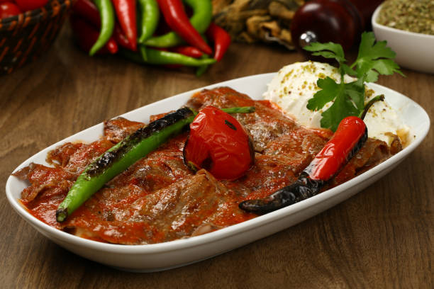

Iskender Kebab

Ingredients
- 1 kg lamb, cut into thin slices
- 500 g pita bread, cut into small pieces
- 200 g yogurt
- 100 g butter
- 2 tomatoes, pureed
- Salt and pepper to taste
Instructions
- Heat a pan and cook the lamb slices until browned.
- In a separate pan, melt the butter and add the pureed tomatoes.
- Mix the cooked lamb with the tomato sauce.
- Place the pita bread pieces on a serving plate.
HomePage